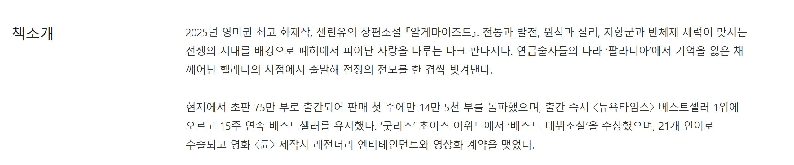

이게 진짜였네...

이게 진짜였네...
아니 이게 더 충격인데
헐 진짜? ㅋㅋㅋㅋ
이게 진짜여? ㄷㄷ
트와일라잇 팬픽으로 출간까지 간 소설이 존나 많은걸로 알고 있는데 이 미친 소설은 빠순이들을 얼마나 양산한거여 ㅋㅋㅋ
????
겨우 75만부로 세계를 흔들었다 말할 수 있나...
많은 남여들의 쥬지와 뷰지를 흔듦
도서는 마케팅이 중요해서...걍 존나게 유명한걸로 유명한 책입니다! 하고 팔면 존나 팔려버림
나미야 잡화점의 기적 같은게 ㄹㅇ 유명해서 유명한걸로 팔린 작품 아닐까
10년전에도 베스트셀러였는데 지금도 베스트셀러임 ㅋㅋ
'현지' 초판 75만부라고 했으니까 상당하긴 한거임
존 그리샴 같은 유명 작가도 이번 신작 초판이 150만부 팔렸는데
뉴비 작가가 팬픽 소설로 시작한게 100만 찍은거면 ㄹㅇ
와 진짜 오랫만에 듣는다
그양반 아직도 잘나감?
한때 이양반 소설 많이 읽었는데
보통 미국 기준으로 그해 최고 베스트셀러다 싶으면 300만부 근접하는거 같은데
이번 신작 초판만 150만부면 여전히 잘나가는건 맞을듯
대단하네
엄청 롱런 하네
근데 왜 요즘 그양반껄로 영화 안나오지
그런 스릴러, 법정물이 너무 없어
나오면 잼있을꺼 같은데
HBO에서 자비의 시간이라는 작품을 매튜 매커너히 주연으로 드라마화 한다는 내용은 있네
0부 출판 여자말포이는요
뭐임 말포이가 왜 남자라고하는거임 해리포터안봤나
걍 동인지잖아.
해리포터도 뭐 흔한 설정들 짜깁기 해서 만들었다고 하니깐 저것도 문제는 없어보임 보니깐 해리포터가 딱 펠월드 느낌이더만
근데 보면 여자들이 좋아할만한 내용인가본데 영상에서 사는거보면 거진 여자임.
혐관 집착 피폐물이라잖아 여자들이 좋아하는거 다들었네 ㅋㅋㅋㅋㅋ
그러니깐 노벨피아 4드론물이 연중 안하고 완결친거라 그거잖아
왜케 AI같지 영상이
보르노 느낌일세….
그래서 숨겨진 비밀이 뭐냐고
말포이가 헤르미온느.ㅈㄴ 쑤시겠지
75만.... 인세 권당 1달러만 잡아도 75만 달러인데 대충 9억 정도 되나? 대박이긴 하네
인세가 그거밖에 안할리도 없고...
TS말포이 팬픽 시작해라.
저래도 저작권 문제없나?
‘ 그레이의 50가지 그림자’도 트와일라잇 팬픽으로 시작했지